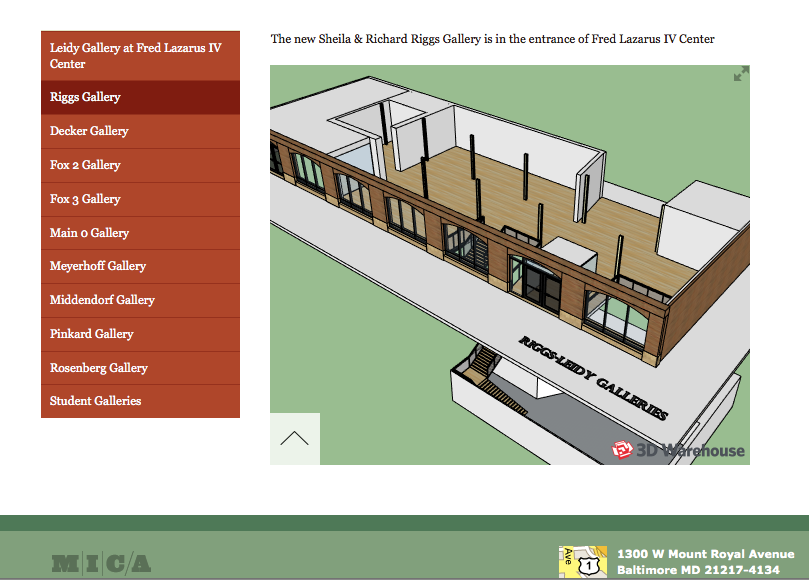
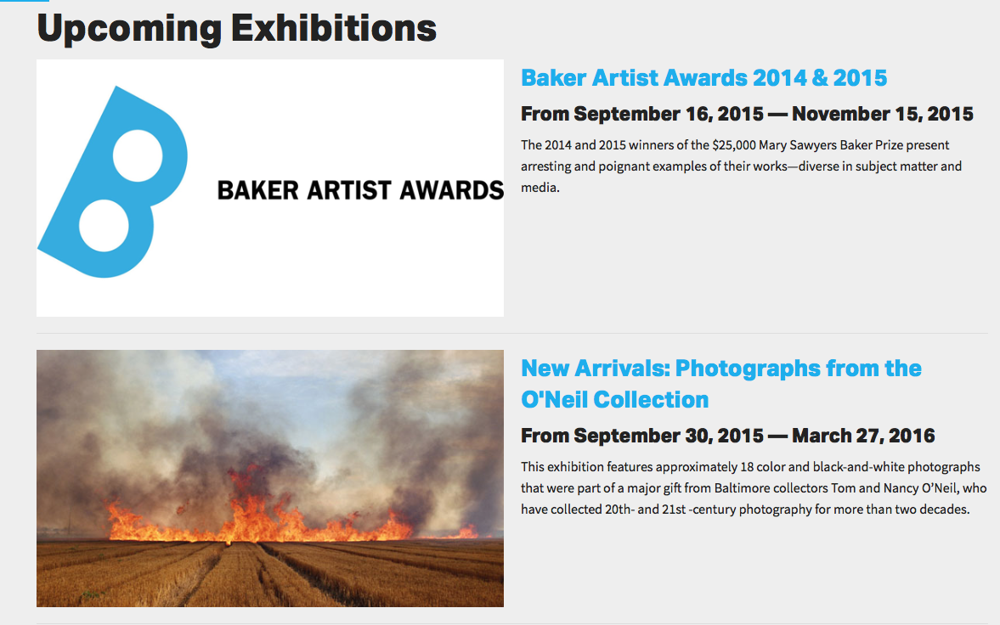
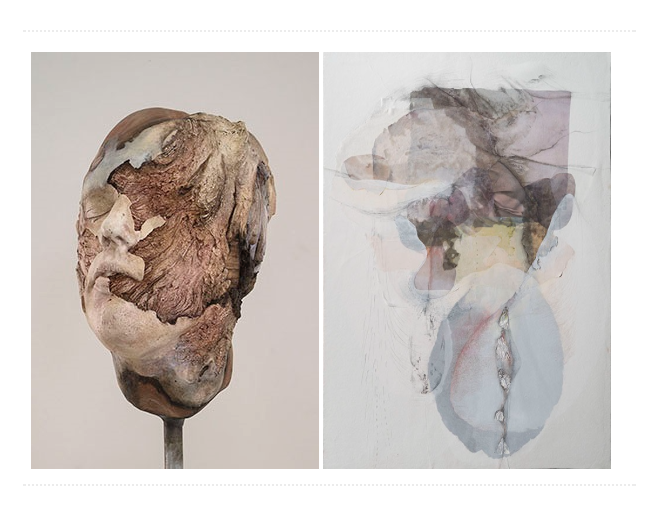
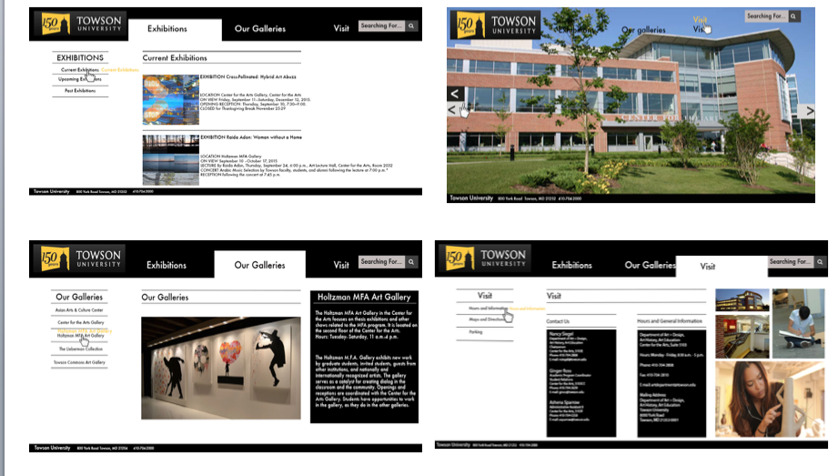
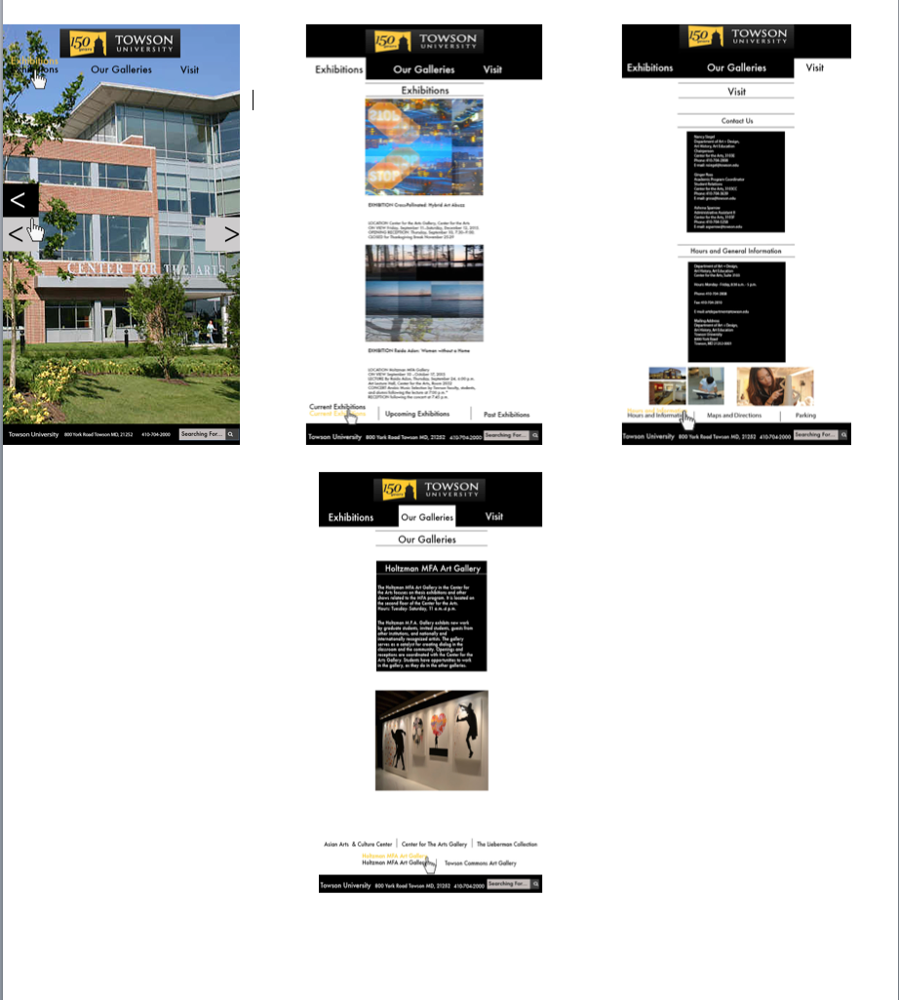
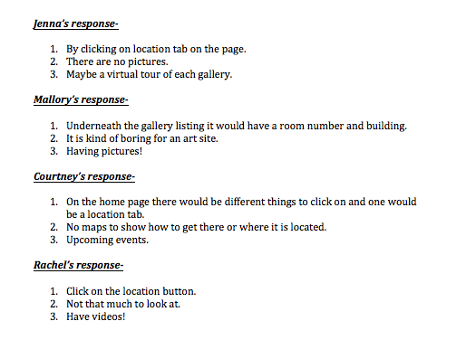
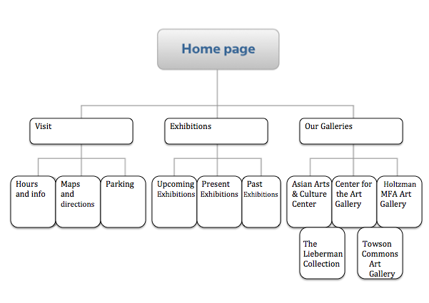
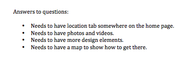

These are competitors of our Towson gallery website.

Above is the screenshot of the gallery map




Interviewees
Jenna Cordiello
Mallory Strauss
Courtney Glasser
Rachel Solomon
Questions
If You were to use te Towson Gallery Website how would You find the location?
What do you not like about the site?
What would you like to see on the site?
  
BMA rating is very good
MICA rating is good
Loyola Art gallery rating is okay